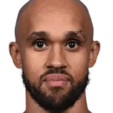

Kristaps Porzingis
2015-16 to 2025-26 · Career Map
His teams won one title, with the 2023-24 Boston Celtics. In his 533 games for 6 teams over 10 seasons they went 273–260 (51.2%), +13 games over .500, with an average final finish of 13.8.
Final NBA finish, season by season
Title Finals Other playoffs Missed the playoffs. #1 = champion; the dashed line is last place that season. Each point opens that season's final standings.
All 30 teams ranked in 2023-24, his best finish (#1)Teammate help
 Luka Doncic15.03 seasons
Luka Doncic15.03 seasons Jaylen Brown12.02 seasons
Jaylen Brown12.02 seasons Jayson Tatum10.02 seasons
Jayson Tatum10.02 seasons
Seasons with help 3.8 to 6.2 (3): best finish #4 of 30, 2021-22, worst #13 of 30, 2019-20.
Career
Regular seasons 1946-47 to 2026-27, games through Nov. 17, 2026. Records include 2026-27 to date; season counts and finishes use completed seasons. Each card opens its board. How we count.
Latest completed seasons
Season by season
Newest first; every header sorts. Final NBA finish is the team's rank among all teams that season (#1 = champion) and opens that season's standings. "Without him" uses the team-season window; the span line counts only the games between his first and last game for the team.
| 2025-26 | #12 of 30 | 46–36 56.1% | Lost 1st round 2–4 | 17 of 82 | 9–8 52.9% | 17–22 43.6%span: 9–13, gap +12.0 | +9.4 | |
| 2025-26 | #20 of 30 | 37–45 45.1% | Missed the playoffs | 15 of 82 | 4–11 26.7% | 13–16 44.8%span: 4–8, gap −6.7 | −18.2 | |
| 2024-25 | #6 of 30 | 61–21 74.4% | Lost conf semis 2–4 | 42 of 82 | 30–12 71.4% | 31–9 77.5%span: 16–6, gap −1.3 | −6.1 | |
| 2023-24 | #1 of 30 | 64–18 78.0% | Title 4–1 | 57 of 82 | 43–14 75.4% | 21–4 84.0%span: 19–4, gap −7.2 | −8.6 | |
| 2022-23 | #23 of 30 | 35–47 42.7% | Missed the playoffs | 65 of 82 | 27–38 41.5% | 8–9 47.1%span: 7–4, gap −22.1 | −5.5 | |
| 2021-22 | #4 of 30 | 52–30 63.4% | Lost conf finals 1–4 | 34 of 82 | 19–15 55.9% | 20–10 66.7%span: 10–6, gap −6.6 | −10.8 | |
| 2021-22 | #22 of 30 | 35–47 42.7% | Missed the playoffs | 17 of 82 | 7–10 41.2% | 5–11 31.2%span: 0–1, gap +41.2 | +9.9 | |
| 2020-21 | #9 of 30 | 42–30 58.3% | Lost 1st round 3–4 | 43 of 72 | 26–17 60.5% | 16–13 55.2%span: 11–9, gap +5.5 | +5.3 | |
| 2019-20 | #13 of 30 | 43–32 57.3% | Lost 1st round 2–4 | 57 of 75 | 32–25 56.1% | 11–7 61.1%span: 11–6, gap −8.6 | −5.0 | |
| 2017-18 | #22 of 30 | 29–53 35.4% | Missed the playoffs | 48 of 82 | 22–26 45.8% | 7–27 20.6%span: 1–6, gap +31.5 | +25.2 | |
| 2016-17 | #24 of 30 | 31–51 37.8% | Missed the playoffs | 66 of 82 | 26–40 39.4% | 5–11 31.2%span: 3–8, gap +12.1 | +8.1 | |
| 2015-16 | #24 of 30 | 32–50 39.0% | Missed the playoffs | 72 of 82 | 28–44 38.9% | 4–6 40.0%span: 2–1, gap −27.8 | −1.1 |
On/off, starts and close games
From the lineup data, 1996-97 on. On/off is net points per 100 possessions with him on the floor minus off, a different unit from the win-rate gaps. Started and off the bench are team records in those games; close games are those within 5 points in the last 5 minutes with him on the floor.
| 2025-26 | +6.1 | 6–6 50.0% | 3–2 60.0% | 1–4 20.0% | |
| 2025-26 | +13.0 | 3–8 27.3% | 1–3 25.0% | 4–3 57.1% | |
| 2024-25 | −7.7 | 30–12 71.4% | N/A | 9–4 69.2% | |
| 2023-24 | −1.5 | 43–14 75.4% | N/A | 13–10 56.5% | |
| 2022-23 | +5.8 | 27–38 41.5% | N/A | 10–23 30.3% | |
| 2021-22 | −3.6 | 19–15 55.9% | N/A | 5–9 35.7% | |
| 2021-22 | +2.2 | 7–10 41.2% | N/A | 4–2 66.7% | |
| 2020-21 | −7.6 | 26–17 60.5% | N/A | 9–10 47.4% | |
| 2019-20 | +5.1 | 32–25 56.1% | N/A | 13–19 40.6% | |
| 2017-18 | +3.1 | 22–26 45.8% | N/A | 9–13 40.9% | |
| 2016-17 | +2.3 | 26–39 40.0% | 0–1 0.0% | 16–18 47.1% | |
| 2015-16 | +6.9 | 28–44 38.9% | N/A | 10–20 33.3% |
Teammate help by season
Help = Teammates Score points for honors won that season by teammates who shared a game with him. How help works.
- 2025-26
 AtlantaHonors not in the data yet
AtlantaHonors not in the data yet - 2025-26
 Golden StateHonors not in the data yet
Golden StateHonors not in the data yet - 2024-25
 Boston
Jayson Tatum All-NBA 1stAll-Star37 gJaylen Brown All-Star33 g
Boston
Jayson Tatum All-NBA 1stAll-Star37 gJaylen Brown All-Star33 g Payton Pritchard Sixth Man40 g
Payton Pritchard Sixth Man40 g
More: last season's honors and other teammates
Help coming in (teammates' honors the season before): 17.0 · from Derrick White (0.5), Jrue Holiday (0.5)
Other teammates (no honors that season): Luke Kornet 38 g, Derrick White 38 g, Jrue Holiday 37 g, Sam Hauser 36 g, Al Horford 32 g, Neemias Queta 28 g, Jordan Walsh 24 g, Baylor Scheierman 17 g, Jaden Springer 17 g, Xavier Tillman 13 g, Drew Peterson 12 g, Torrey Craig 6 g, JD Davison 5 g
- 2023-24Boston
Jaylen Brown Finals MVPAll-Star51 gJayson Tatum All-NBA 1stAll-Star52 g
 Jrue Holiday All-Def 2nd49 g
Jrue Holiday All-Def 2nd49 g
Derrick White All-Def 2nd52 gMore: last season's honors and other teammates
Help coming in (teammates' honors the season before): 12.0
Other teammates (no honors that season): Payton Pritchard 57 g, Sam Hauser 54 g, Al Horford 46 g, Luke Kornet 42 g, Oshae Brissett 37 g, Sviatoslav Mykhailiuk 27 g, Dalano Banton 15 g, Neemias Queta 15 g, Lamar Stevens 14 g, Xavier Tillman 12 g, Jaden Springer 9 g, Jordan Walsh 6 g, JD Davison 1 g
- 2022-23
 WashingtonNo honored teammate
WashingtonNo honored teammate - 2021-22
 Dallas
Luka Doncic All-NBA 1stAll-Star23 g
Dallas
Luka Doncic All-NBA 1stAll-Star23 g
More: last season's honors and other teammates
Help coming in (teammates' honors the season before): 5.0
Other teammates (no honors that season): Dwight Powell 34 g, Jalen Brunson 33 g, Dorian Finney-Smith 33 g, Tim Hardaway Jr 28 g, Reggie Bullock 28 g, Frank Ntilikina 25 g, Josh Green 24 g, Maxi Kleber 23 g, Sterling Brown 22 g, Trey Burke 20 g, Moses Brown 15 g, Willie Cauley-Stein 13 g, Boban Marjanovic 10 g, Theo Pinson 8 g and 8 more
- 2021-22WashingtonNo honored teammate
- 2020-21Dallas
Luka Doncic All-NBA 1stAll-Star40 g
More: last season's honors and other teammates
Help coming in (teammates' honors the season before): 5.0
Other teammates (no honors that season): Tim Hardaway Jr 42 g, Jalen Brunson 40 g, Trey Burke 36 g, Josh Richardson 36 g, Dorian Finney-Smith 33 g, Dwight Powell 30 g, Maxi Kleber 29 g, Willie Cauley-Stein 27 g, Josh Green 20 g, Wesley Iwundu 16 g, James Johnson 15 g, Boban Marjanovic 14 g, Nate Hinton 12 g, Nicolo Melli 11 g and 3 more
- 2019-20Dallas
Luka Doncic All-NBA 1stAll-Star47 g
More: last season's honors and other teammates
Help coming in (teammates' honors the season before): 0.8
Other teammates (no honors that season): Tim Hardaway Jr 56 g, Maxi Kleber 56 g, Dorian Finney-Smith 55 g, Delon Wright 55 g, Seth Curry 48 g, Justin Jackson 47 g, Jalen Brunson 43 g, Boban Marjanovic 31 g, Dwight Powell 29 g, Jose Juan Barea 20 g, Courtney Lee 18 g, Ryan Broekhoff 14 g, Willie Cauley-Stein 10 g, Michael Kidd-Gilchrist 9 g and 2 more
- 2017-18
 New YorkNo honored teammate
New YorkNo honored teammateMore: last season's honors
Help coming in (teammates' honors the season before): 0.2 · from Willy Hernangomez (0.2)
- 2016-17New York
 Carmelo Anthony All-Star60 g
Carmelo Anthony All-Star60 g Willy Hernangomez All-Rookie 1st57 g
Willy Hernangomez All-Rookie 1st57 g
More: last season's honors and other teammates
Help coming in (teammates' honors the season before): 1.0
Other teammates (no honors that season): Justin Holiday 66 g, Kyle O'Quinn 64 g, Courtney Lee 62 g, Derrick Rose 54 g, Mindaugas Kuzminskas 53 g, Brandon Jennings 49 g, Joakim Noah 39 g, Ron Baker 39 g, Lance Thomas 38 g, Sasha Vujacic 33 g, Maurice Ndour 22 g, Marshall Plumlee 15 g, Chasson Randle 13 g
- 2015-16New York
Carmelo Anthony All-Star65 g
More: last season's honors and other teammates
Help coming in (teammates' honors the season before): 1.1 · from Langston Galloway (0.1)
Other teammates (no honors that season): Langston Galloway 72 g, Robin Lopez 72 g, Derrick Williams 70 g, Jose Calderon 69 g, Jerian Grant 66 g, Arron Afflalo 61 g, Lance Thomas 57 g, Kyle O'Quinn 55 g, Sasha Vujacic 51 g, Kevin Seraphin 42 g, Louis Amundson 25 g, Cleanthony Early 11 g, Thanasis Antetokounmpo 2 g, Jimmer Fredette 2 g
Compare with a peer
 Kristaps Porzingis vs Fred VanVleetCareers centered on 2020-21 and 2020-21; help 4.1 and 4.0 points per season; own honors 0.1 and 0.1 per season; 533 and 550 games.
Kristaps Porzingis vs Fred VanVleetCareers centered on 2020-21 and 2020-21; help 4.1 and 4.0 points per season; own honors 0.1 and 0.1 per season; 533 and 550 games. Kristaps Porzingis vs Malcolm BrogdonCareers centered on 2020-21 and 2019-20; help 4.1 and 3.9 points per season; own honors 0.1 and 0.1 per season; 533 and 463 games.
Kristaps Porzingis vs Malcolm BrogdonCareers centered on 2020-21 and 2019-20; help 4.1 and 3.9 points per season; own honors 0.1 and 0.1 per season; 533 and 463 games. Kristaps Porzingis vs Delon WrightCareers centered on 2020-21 and 2020-21; help 4.1 and 4.3 points per season; own honors 0.1 and 0.0 per season; 533 and 548 games.
Kristaps Porzingis vs Delon WrightCareers centered on 2020-21 and 2020-21; help 4.1 and 4.3 points per season; own honors 0.1 and 0.0 per season; 533 and 548 games.
Record against each opponent
- Best regular-season record against one franchise: 15–5 (75.0%) against the New Orleans Pelicans in 20 games.
- Toughest regular-season record against one franchise: 5–15 (25.0%) against the Boston Celtics in 20 games.
- Most playoff series against one franchise: 2 against the LA Clippers, 0–2 in series and 4–6 in games.
Regular season, completed seasons: 533 games, 273–260, against 30 franchises. Grouped by franchise (named as today); game lists keep each team's name that season.
| Games list | |||||||
|---|---|---|---|---|---|---|---|
| 23 | 15–8 | 65.2% | +7 | N/A | 2015-16 to 2025-26 | ||
| 23 | 6–17 | 26.1% | −11 | N/A | 2015-16 to 2025-26 | ||
| 22 | 15–7 | 68.2% | +8 | N/A | 2015-16 to 2025-26 | ||
| 22 | 14–8 | 63.6% | +6 | N/A | 2015-16 to 2025-26 | ||
| 21 | 10–11 | 47.6% | −1 | N/A | 2015-16 to 2025-26 | ||
| 20 | 5–15 | 25.0% | −10 | N/A | 2015-16 to 2025-26 | ||
| 20 | 9–11 | 45.0% | −2 | N/A | 2015-16 to 2025-26 | ||
| 20 | 15–5 | 75.0% | +10 | N/A | 2015-16 to 2025-26 | ||
| 20 | 12–8 | 60.0% | +4 | N/A | 2015-16 to 2025-26 | ||
| 19 | 7–12 | 36.8% | −5 | N/A | 2015-16 to 2023-24 | ||
| 19 | 9–10 | 47.4% | −1 | N/A | 2015-16 to 2023-24 | ||
| 19 | 14–5 | 73.7% | +9 | 1–0 (4–1 in games) | 2015-16 to 2025-26 | ||
| 18 | 5–13 | 27.8% | −8 | 0–2 (4–6 in games) | 2015-16 to 2025-26 | ||
| 18 | 9–9 | 50.0% | 0 | 1–0 (3–1 in games) | 2015-16 to 2024-25 | ||
| 18 | 13–5 | 72.2% | +8 | N/A | 2015-16 to 2025-26 | ||
| 18 | 11–7 | 61.1% | +4 | N/A | 2015-16 to 2025-26 | ||
| 17 | 5–12 | 29.4% | −7 | N/A | 2015-16 to 2025-26 | ||
| 17 | 7–10 | 41.2% | −3 | N/A | 2015-16 to 2024-25 | ||
| 16 | 11–5 | 68.8% | +6 | N/A | 2015-16 to 2024-25 | ||
| 16 | 10–6 | 62.5% | +4 | N/A | 2015-16 to 2024-25 | ||
| 16 | 9–7 | 56.2% | +2 | 0–1 (2–4 in games) | 2019-20 to 2025-26 | ||
| 16 | 7–9 | 43.8% | −2 | N/A | 2015-16 to 2025-26 | ||
| 16 | 9–7 | 56.2% | +2 | N/A | 2015-16 to 2024-25 | ||
| 16 | 8–8 | 50.0% | 0 | N/A | 2015-16 to 2024-25 | ||
| 16 | 8–8 | 50.0% | 0 | N/A | 2015-16 to 2023-24 | ||
| 15 | 6–9 | 40.0% | −3 | N/A | 2015-16 to 2025-26 | ||
| 15 | 7–8 | 46.7% | −1 | N/A | 2015-16 to 2025-26 | ||
| 14 | 5–9 | 35.7% | −4 | N/A | 2015-16 to 2024-25 | ||
| 14 | 6–8 | 42.9% | −2 | N/A | 2015-16 to 2024-25 | ||
| 9 | 6–3 | 66.7% | +3 | 1–0 (3–0 in games) | 2015-16 to 2025-26 |
Rows add up to his career record in his games. A playoff series counts when he played in it; early round-robin games show as games only. How we count.
Playoffs, with and without him
| 2024-25 | Lost in the conference semifinals 2–4 to | #6 of 30 | 11 of 11 | 6–5 54.5% | N/A | N/A | |
| 2023-24 | Won the title 4–1 over | #1 of 30 | 7 of 19 | 6–1 85.7% | 10–2 83.3% | +2.4 | |
| 2020-21 | Lost in the first round 3–4 to | #9 of 30 | 7 of 7 | 3–4 42.9% | N/A | N/A | |
| 2019-20 | Lost in the first round 2–4 to | #13 of 30 | 3 of 6 | 1–2 33.3% | 1–2 33.3% | 0.0 |
Arrival and departure
Team wins per 82 games the season before he arrived vs his first season there, and his last season vs the season after he left. Per 82 so short seasons compare fairly. These are team records, not a measure of what he did.
| Arrived | 2025-26 | 2024-25: 40–42 40.0 per 82 | 2025-26: 46–36 46.0 per 82 | +6.0 wins | |
| Arrived | 2025-26 | 2024-25: 48–34 48.0 per 82 | 2025-26: 37–45 37.0 per 82 | −11.0 wins | |
| Left | 2025-26 | 2024-25: 61–21 61.0 per 82 | 2025-26: 56–26 56.0 per 82 | −5.0 wins | |
| Arrived | 2023-24 | 2022-23: 57–25 57.0 per 82 | 2023-24: 64–18 64.0 per 82 | +7.0 wins | |
| Left | 2023-24 | 2022-23: 35–47 35.0 per 82 | 2023-24: 15–67 15.0 per 82 | −20.0 wins | |
| Left | 2022-23 | 2021-22: 52–30 52.0 per 82 | 2022-23: 38–44 38.0 per 82 | −14.0 wins | |
| Arrived | 2021-22 | 2020-21: 34–38 38.7 per 82 | 2021-22: 35–47 35.0 per 82 | −3.7 wins | |
| Arrived | 2019-20 | 2018-19: 33–49 33.0 per 82 | 2019-20: 43–32 47.0 per 82 | +14.0 wins | |
| Left | 2018-19 | 2017-18: 29–53 29.0 per 82 | 2018-19: 17–65 17.0 per 82 | −12.0 wins | |
| Arrived | 2015-16 | 2014-15: 17–65 17.0 per 82 | 2015-16: 32–50 32.0 per 82 | +15.0 wins |
Seasons split between teams
Each team's record before his first game for it, inside his window (games with and without him) and after his last game, in the seasons he played for two or more teams.
| 2025-26 | Oct. 22, 2025 to Jan. 7, 2026 | N/A | 26–30 46.4% | 20–6 76.9% | 17 | |
| 2025-26 | Feb. 19, 2026 to April 12, 2026 | 20–18 52.6% | 17–27 38.6% | N/A | 15 | |
| 2021-22 | Oct. 21, 2021 to Jan. 29, 2022 | N/A | 39–25 60.9% | 13–5 72.2% | 34 | |
| 2021-22 | March 6, 2022 to April 6, 2022 | 23–26 46.9% | 12–21 36.4% | N/A | 17 |
Best duos
Team record in regular-season games both played, top 10 by win %, at least 50 games together.
- Derrick White 69–21 76.7%
 Sam Hauser
67–23 74.4%
Sam Hauser
67–23 74.4%- Jrue Holiday
64–22 74.4%
- Payton Pritchard
71–26 73.2%
- Jayson Tatum
65–24 73.0%
- Jaylen Brown
60–24 71.4%
 Luke Kornet
57–23 71.2%
Luke Kornet
57–23 71.2% Al Horford
57–27 67.9%
Al Horford
57–27 67.9% Dwight Powell
57–36 61.3%
Dwight Powell
57–36 61.3%- Luka Doncic
67–43 60.9%